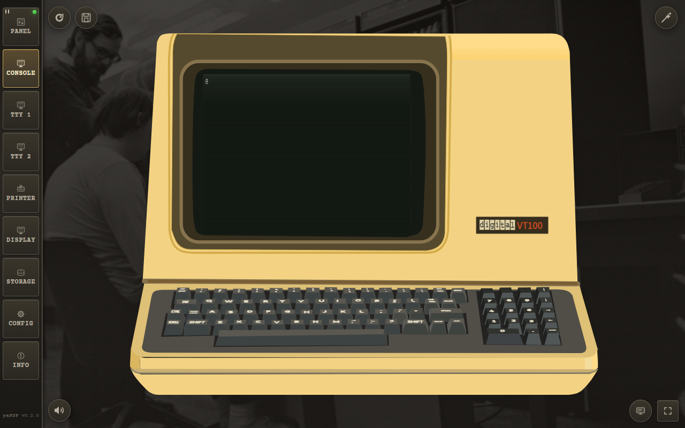
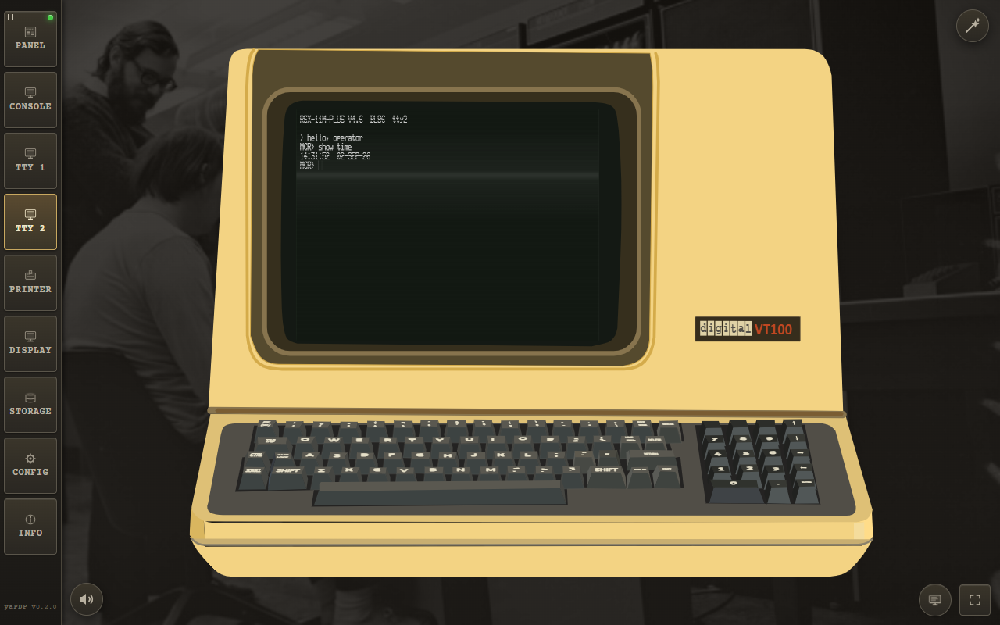
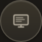

yaPDP — User Manual
Welcome to the machine. This guide walks you through every page of the emulator — from the very first boot to the deepest configuration options — so you can spend your time in the machine room, not in the documentation.
Everything below applies to both the browser version and the Tauri desktop app.
Table of Contents
- Quick Start
- The Front Panel (Panel page)
- The Operator Console
- User Terminals (TTY 1 / TTY 2)
- The LP11 Line Printer (Printer page)
- The VT11 Vector Display (Display page)
- Storage (paper tape, disk & tape images)
- Machine State (STATE button)
- Configuration (Config page)
- Guest Operating Systems
- Buttons, Shortcuts & Indicators
- Troubleshooting
- The Desktop App
Quick Start
On your very first launch the emulator greets you with a short onboarding hint that explains what to do right away — which page to open, the mounted guest OSes and their boot commands. A Quick boot button next to Got it opens the wizard directly, so a first-time user can see a guest OS running in one click:

The first-run onboarding hint.
The magic wand
In a hurry? Use the magic wand button in the top-right corner of the window. It stays on every page except Info. One click does everything:
- Opens a picker listing every guest operating system (and the paper tapes) whose image this build ships — the picker is filtered by the build manifest (
media/manifest.json), plus any images you have imported by drag & drop. Paper tapes always stay listed. - Chooses one, switches to the operator console, and reboots the machine.
- Types the boot command — and the login too, where the credentials are known (e.g. Unix V5:
boot rk0→unix→ login root).

The quick-boot picker lists every guest OS and paper tape.
The wizard is prompt-aware: it watches the console output and types the login only when the guest actually prints login:, so slow boots with lots of output (e.g. 2.11 BSD) still reach the prompt reliably. Each guest also declares the machine profile it wants — e.g. RT-11/RSX/RSTS enable the LP11 line printer, and Unix V5/BSD force a teletype console — so the wizard reconfigures the machine if needed and resumes the boot automatically. Every wizard boot starts on a fresh page (clean paper and clear screens), and a toast warns "Autoloading in progress — don't touch the teletype/keyboard" while the sequence is being typed.

While the wizard types the boot sequence, a toast asks you not to touch the teletype/keyboard.
The classic way
- At the
@prompt, typeboot rp1and press ENTER. - BSD 2.11 will autoboot into multiuser mode. Login as
root(no password). - Try
ls,ps -aux,df— or compile a C program withcc.
The boot command is upper case in the manual (BOOT RK1) because that is what works on every console: a Model 33 ASR teletype has no lower-case type at all, so a lower-case command can never reach the machine from it. On a video terminal (VT52 or VT100) lower case works just as well — the guest folds it.
The Front Panel (Panel page)
Every switch, LED, and rotary knob of a real PDP-11/70 is faithfully recreated. The Panel page is where you toggle in a bootstrap loader the way DEC engineers did in the 1970s.

The PDP-11/70 front panel, powered on.
Front panel switch sequences
A simple light chaser — toggle this in to see the address and data LEDs dance:
Switch sequence: HALT, 001000, LOAD ADDRESS
012700, DEPOSIT
000001, DEPOSIT
006100, DEPOSIT
000005, DEPOSIT
000775, DEPOSIT
001000, LOAD ADDRESS, ENABLE, START
Restart the bootloader:
HALT, 120000, LOAD ADDRESS, ENABLE, START
The Bootstrap now! button refuses to start the machine while it is powered off:

Bootstrap now! requires the machine to be powered on first.
The dialog also offers a shortcut to the CONFIG Auto-boot option: tick the checkbox to start the default bootstrap automatically on every future power-on, without visiting the Config page. The choice persists and stays in sync with the CONFIG page checkbox.
The Operator Console
The operator console is what the PDP-11 uses as its TT0: — the machine's own typewriter. Depending on the CONFIG page, it is a Model 33 ASR teletype or one of the two video terminals: a DECscope VT52 (see below) or a DEC VT100.
Model 33 ASR teletype
The console is rendered as an authentic light-cream/beige Model 33 ASR: a paper roll behind the rising sheet, a glass carriage window, and a stamped Teletype Corporation logo on the lower face plate.

The Model 33 ASR operator console at the @ prompt.
- Keyboard. Round dark keycaps with light two-line legends — the base glyph centred, the CTRL-code name or shift symbol above — plus the historical special keys: ESC, LINE FEED, RETURN, DELETE, HERE IS (answerback), REPT (auto-repeat) and BREAK (asserts the console DL11 break condition).
- Upper Case Only. The on-screen keycaps always send upper-case letters. The physical keyboard folds a –
zto A –Zonly when the Upper Case Only CONFIG option is enabled (off by default, so 2.11 BSD receives lower case). - Force PDP Output Uppercase.
Areal Model 33 ASR print mechanism has no lower-case type, so machine output is printed in upper case (on by default) and a loader that writes lower case cannot put those letters on the paper. The punched tape still records the raw byte — reading such a tape in LOCAL prints upper case, while in LINE the original lower case reaches the machine. - Paper printing. Authentic nroff/man overstrike (
^H) rendering: re-printing the same glyph gives bold, underscores give underline, and striking a different glyph leaves the real dark overstrike blot a hard-copy terminal makes. - Margins. Long lines faithfully jam the carriage at the right margin (72 or 80 columns); characters overstrike the last column instead of wrapping. The paper width follows the selected width so a full line reaches the paper edge. The paper is anchored to the carriage and grows upward out of the top of the machine body; once its edge reaches the top of the window, a scrollbar appears and the view follows the freshly printed line.
- ASR reader/punch. Beside the machine sits the ASR tape reader/punch unit. Every byte echoed to the console punches a matching row of holes on an 8-track paper tape (tracks 1–7 = ASCII, track 8 = parity). As on a real ASR-33 the punch is OFF by default — enable it from the CONFIG page or its own control. Both hanging tapes swing briefly on every step of the mechanism; once a tape reaches the bottom of the window it is scrolled with the mouse wheel (neither tape draws a scrollbar).
- Paper-tape reader. The Load tape button below the machine opens a file dialog and inserts a paper tape into the reader — a raw
.ptap(as saved by the punch or the Storage page), a compressed.ptap.zst, or a plain.txtwhose characters become 7-bit tape codes. The full tape hangs from the reader slot down to the bottom of the window, its ragged free end torn like the punched tape's — once it reaches the bottom it is scrolled with the mouse wheel (like the punched tape, it draws no scrollbar). As the tape is read it visibly moves up through the slot and shortens, swinging on every byte; when the last byte is read the tape has gone into the machine and a new one can be loaded. - Reader switch. The four-position switch on the TAPE READER cabinet governs reading: START — runs the reader continuously, sending the tape to the machine at the console speed (authentic ~10 chars/sec or the fast CONFIG pace);
- AUTO — sends one byte and then feeds the next only when the machine's DL11 has accepted the previous one (paused by
DC3 / X-OFF, resumed byDC1 / X-ON); - STOP — pauses;
- FREE — releases the tape and shows the Remove tape from reader button (hidden in every other mode) to pull it out.
Clicking a position label jumps straight to it; clicking the round switch disc itself turns it one detent clockwise (START → STOP → FREE → AUTO), like rotating the real switch.
- CCU knob. The LINE / OFF / LOCAL knob on the apron works the same way: click a label to jump, or click the knob itself to turn it one detent clockwise (LINE → OFF → LOCAL). The CCU routes every read byte exactly like the keyboard: in LOCAL the tape prints on the paper only (a tape-to-paper copy, nothing reaches the machine); in LINE it is sent to the machine and printed by the machine's echo — printing locally too would double every character on echoing guests.
- Duplicating tapes. With the punch engaged (ON), every read byte is also punched onto the output tape — the classic ASR trick for copying tapes (reader in, fresh tape out).
VT52 as the console
When the console terminal is set to a VT52, the operator console becomes a DECscope with its authentic white/grey (P4) phosphor on a black tube — see User Terminals below for the full behaviour, which is shared.

A DECscope VT52 as the operator console, showing the @ prompt.
VT100 as the console
Set the console terminal to VT100 and the console becomes a DEC VT100 — the ANSI terminal that succeeded the DECscope. It is drawn in its own cabinet, at its own proportions (the artwork is the terminal's, not a restyled DECscope), and it shares everything that is not the tube itself: the page layout, the zoom button and double-click zoom, the STATE/REBOOT placement and the keyboard handling.

A DEC VT100 as the operator console, showing the @ prompt.
A VT100 is a superset of the VT52, exactly as the hardware was: the DECscope sequences still work and the terminal adds the ANSI grammar (CSI sequences, DEC private modes, scrolling regions, G0/G1 character sets), which it speaks from power-on — a VT100 is a CRT-only machine and has no hardcopy mode to enter first. What never existed on the hardware is refused rather than faked: ESC Y direct addressing, ESC F/ESC G graphics on/off, the VT52 keypad modes and the VT52 identification reply. Asked who it is (CSI c) the VT100 answers VT100 with AVO, and CSI ? 2 h (DECANM) drops it into VT52 compatibility mode, as the real machine did.
Two CONFIG options belong to this terminal alone: the tube phosphor — P4 white, the phosphor the VT100 was introduced on, or P1 green — and the key click (the DECscope's keyboard was mechanical and has no click to make). The VT52 reverse video switch is the DECscope's own and never touches a VT100: there, inverse text comes from the SGR 7 attribute the software sends.
User Terminals (TTY 1 / TTY 2)
Up to two user video terminals (shown only when configured on the CONFIG page) let guest OSes that prefer video terminals run side by side. Each is a DECscope VT52 or a DEC VT100, chosen independently (None | VT52 | VT100), and each is drawn in the cabinet of the terminal you picked — the DECscope's slanted monoblock (an off-white moulded-plastic cabinet with a vent grille, a recessed screen in a deep bezel and a plain side panel with a raised ridge) or the VT100's own enclosure. Input comes from the physical keyboard, as on the original machines.

A user VT52 terminal (TTY 1) running an interactive session.

A user VT100 terminal (TTY 2) — same page, same behaviour, its own cabinet.
- Font. Text is rendered in the authentic
fritzm/vt52bitmap display font (monospaceis the fallback until the webfont loads). - Clear screen. Clear screen (ESC E) and form feed (
^L) both wipe the display and home the cursor, soclearand multi-page nroff/man output start each page from the top row. - CRT simulation (optional). A pure-CSS effect adds brightness flicker, scanline shimmer and a vertical-hold roll band.
- Text mode (optional). Renders the terminal as a plain text field instead of the canvas, enabling native text selection and Windows Clipboard (
Ctrl+C/Ctrl+V/ right-click paste) for fast source-code entry — at the cost of the SGR emphasis rendering.
The LP11 Line Printer (Printer page)
The LP11 is an animated line printer on wide 132-column paper (72/80/100/132 selectable). It has no keyboard — it only prints. Use the Print button to send the accumulated jobs to the real OS printer via the system dialog, or Save.txt to export the output (page breaks are kept as \f markers).

The LP11 line printer printing a job listing.
- Speed. Like the real LP11, it echoes characters far faster than the Model 33 ASR console teletype (which keeps its authentic ~33 cps pacing), printing at close to the original's ~300 lines/min.
- DONE handshake. The LP11 honours the historical DONE handshake: writing LPDB clears DONE and re-asserts it as each character is consumed by the mechanism, so a guest print job is throttled at printer speed.
- OFF LINE. When the printer is OFF LINE (or powered off), the controller latches a sticky ERROR flag in LPCS while keeping DONE set — so a guest OS driver reports an error (e.g.
?LP0: I/O error) instead of silently discarding the job. - Form feed. The LP11 honours form feed (FF, 0x0C) — the 2.11BSD spooler (
lpr/lpd) sends FF between jobs so each starts on a fresh page: it fills the rest of the sheet (66 lines at 6 LPI) and closes it with a dashed fold/perforation marker. - Tabs & paper. The carriage advances to the next 8-column tab stop on TAB, and the paper is sized to the configured print width (centred in the machine body). The cabinet auto-scales down proportionally to fit the window when it gets too small, and the rising fanfold paper climbs the same fraction of the window after scaling.
The VT11 Vector Display (Display page)
An optional DEC VT11 vector-graphics display processor on its own green-phosphor CRT page (1024×768 logical resolution, auto-scaled to fit the window), enabled from the CONFIG page. Lunar Lander uses it — the quick-boot wizard enables the display and switches to the Display page automatically.

Lunar Lander drawn on the VT11 vector-graphics CRT.
Storage (paper tape, disk & tape images)
The Storage page manages every kind of storage media. It has two tabs — Images and Paper Tapes — because the two workflows are completely different. An image is a whole device mounted into the machine and remembered between sessions; a paper tape is a stream of bytes that the reader walks through from the first frame to the end.

The Storage page, Images tab: the drop zone, mounted images, disk export and persistent disk changes.
Images tab:
- Drop image. Drop a disk or tape image here —
.dsk,.tap,.ptapand their.zst-compressed forms are supported. While the Storage page is active you can also drop a file anywhere over the window: a full-window drop target appears. A.zst file is a zstd frame and the browser unwraps it on the fly, so a downloaded image needs no unpacking first. - The file name is the device name. An image is mounted under the device URL taken from the file itself:
RP1.DSK.ZSTbecomesrp1.dsk, which is why the guest boots it withboot rp1. Rename the file to the unit you want to use — the table below maps every device to its drive, its controller and its boot command. - Mounted images / Unmount. Lists the images mounted in this browser and lets you unmount one again. The counter next to it counts the images you mounted (dropped or imported), not the ones the desktop build carries inside itself. Mounted images live in browser storage (IndexedDB) and are re-mounted automatically on the next launch.
- Export disk. Downloads a mounted disk image to your machine.
- Persistent disk changes. Guest-OS writes are saved to browser storage and overlaid on the base image on the next launch, so files an operating system created are still there tomorrow. Only the blocks the guest actually wrote are kept — the base image is fetched again on every launch — and a saved block always wins over the pristine one. They are written out periodically and when you leave the page, and they belong to one image: Reset image discards them for the selected disk, Reset all for every disk, which returns the media to its factory state.
Which file is which device:
| Image | Drive | Controller | Boot it with |
|---|---|---|---|
| rk0 … rk5 | RK05 disk cartridge | RK11 | boot rkN |
| rl0 … rl3 | RL01 / RL02 cartridge | RL11 | boot rlN |
| rp0 … rp4 | RP04 / RP06 disk pack | RP11 | boot rpN |
| ra0 … ra2 | RA80 / RA81 (MSCP) | UDA50 | boot raN |
| tm0 … tm2 | 9-track magnetic tape | TM11 | boot tmN (RSTS restores with ROLLIN) |
| *.ptap | Paper tape reader / punch | PTR11 | boot pr |

The Storage page, Paper Tapes tab: the reader file selector, a .ptap drop zone and the punch-tape export.
Paper Tapes tab:
- Paper tape reader file. A selector for the reader (
#ptr) holding the tapes this build ships — BASIC-11 V007A, ODT-11X-V004A, ED-11-V004B, Lunar Lander and the bootstrap loader — plus any.ptap you dropped. Load one and boot it withBOOT PR. - Rewind tape and the tape state. The indicator beside the button says whether a tape is loaded and how far the reader has moved through it; Rewind tape puts it back to the first frame, which is what a guest does when it restarts a read.
- Drop paper tape. A small drop zone accepting
.ptapand.ptap.zst— dropped tapes are added to the reader file selector. - Export paper tape. The punch buffer is filled by the bytes the console echoes, and the counter shows how much is on the tape. Download saves it as a.ptap; Clear empties the buffer for the next tape.
Note: the paper-tape reader is driven by the console bytes — every byte echoed to the console
punches a matching row of holes on the ASR paper tape.
Machine State (STATE button)
The round STATE button (top-left corner, right of REBOOT) opens the machine-state dialog — a full save/restore of the emulated PDP-11, not just the CPU: registers, memory, every I/O device (console, terminals, printer, disks, tape and the paper-tape reader/punch), the paper in the teletype and LP11, the video-terminal screen contents (VT52 and VT100 alike) and even the VT11 vector-display picture are all captured. Think of it as a save file of the whole machine.

The machine-state dialog with one freshly saved state.
- Save state — captures the machine exactly as it is right now under an auto-generated name (date and time). The hardware configuration is part of the state: restoring it re-applies the console type, user terminals, printer and VT11 display, restarting the machine to match.
- Load — restores the selected state and restarts the machine; a confirmation asks first. States saved by older versions of the emulator keep working.
- Rename / Delete — organise the list or remove states; the counter next to the list shows how many states you have.
The STATE button mirrors REBOOT and is available on the Panel, Console (teletype, VT52 or VT100) and TTY pages. States are stored in the browser's IndexedDB and survive reloads and sessions.
Configuration (Config page)
The Config page controls the emulated peripherals and is persisted between sessions. The form is split into four tabs, with the Apply and Restore defaults actions in a bar below the tabs:

Equipment
- Console terminal — the operator console (tty0): a Model 33 ASR teletype, a DECscope VT52 or a DEC VT100.
- User terminals — the two user terminals (TTY 1 / TTY 2), each
None | VT52 | VT100and each with its own sidebar page; the number of terminals is read off the two selects, and TT2 can only be filled once TT1 is. - Line printer (LP11) — install the animated LP11 line printer on its own Printer page.
- VT11 graphics display — install the DEC VT11 vector-graphics terminal on its own Display page.
- Teletype print width — 72 or 80 columns for the Model 33 ASR console (a teletype is at most an 80-column machine).
- Printer width — 72/80/100/132 columns for the LP11 printer page.
- Teletype speed — authentic (real 110-baud Model 33 ASR, ~10 chars/sec) or fast development pace.
- Upper Case Only — send letters from the physical keyboard in upper case (authentic Model 33 ASR); off by default so lower-case (e.g. 2.11 BSD file names) passes through.
- Force PDP Output Uppercase — print machine output in upper case (authentic Model 33 ASR, which cannot print lower case); on by default. The paper tape keeps the raw code, and a video terminal (VT52 or VT100) is not affected at all — both print lower case.

Look & sound
- VT100 key click — audible key-click feedback on VT100 terminals; the DECscope keyboard was mechanical and has no click to make, so the field dims when no VT100 is installed.
- VT100 phosphor — the VT100 tube: P4 white (the phosphor it was introduced on) or P1 green. The DECscope is pinned to P4 — it was never sold with another.
- VT52 reverse video — the historical DECscope reverse-video mode: black text on white. It is the DECscope’s own switch; a VT100 shows inverse text only when the software asks for it with the SGR 7 attribute.
- CRT effects — pure-CSS CRT simulation: brightness flicker, phosphor shimmer and a vertical-hold roll band.
- Machine hum — ambient power-supply hum and fan noise while the machine is on.
- Photo backdrop — show the PDP-11 machine-room photo behind the pages.

Behaviour
- Reboot confirmation — ask before rebooting the machine; the "Don't show this warning anymore" option can be restored here at any time.
- Help Me! sticker — show the operator's hand-written bootstrap sticky note on the Panel page.
- Machine power — the machine is powered on; switching it off powers down the PDP-11 (POWER LOCK in the off position).
- Auto-boot — start the default bootstrap automatically when the machine is powered on or rebooted. The reboot confirmation dialog offers a shortcut to this option (its "Start the default bootstrap automatically after reboot" checkbox).
- First-run hint — replay the first-run welcome overlay with quick-start boot suggestions on the next launch.

Development
- Plain text input instead of the canvas CRT — render the terminal as a text field instead of the canvas CRT, giving native text selection and Windows Clipboard (Ctrl+C / Ctrl+V / right-click paste) for fast source-code entry; loses SGR attributes (bold/underline/reverse). It acts on the page, so a VT52 and a VT100 terminal are both rendered this way.
Leaving the Config page with uncommitted changes asks for confirmation, so nothing is lost silently:

The emulator warns before leaving Config with uncommitted changes.
Structural changes (console type, terminals, printer, VT11 display) are committed with Apply, which restarts the machine so the emulated hardware matches the configuration. Print widths, teletype speed, the Upper Case Only and Force PDP Output Uppercase flags, key click, reverse video, CRT effects, VT52 text mode, machine hum and the photo backdrop apply immediately. Restore defaults fills the form with factory values (committed by Apply); the four live BEHAVIOUR options — Reboot confirmation, Help Me! sticker, Machine power and Auto-boot — are reset to their factory values immediately, without waiting for Apply (the machine powers down, since the factory state is off).
The hum is synthesized with Web Audio on its own audio channel, so it never cuts off the teletype/printer or the VT100 key-click sounds.
Guest Operating Systems
The emulator ships with ready-to-boot disk and tape images. Just type boot <device> at the @ prompt at the @ prompt — or pick one with the magic wand. In a build with a reduced image set (e.g. the Minimal desktop variant), rows whose image is not shipped are dimmed and marked image not in this build — the table shows exactly what can boot here.
| Disk | Operating System | Boot Command | What Happens | Credentials |
|---|---|---|---|---|
| RK0 | Unix V5 | boot rk0 |
unix → login as root |
root |
| RK1 | RT-11 v4.0 | BOOT RK1 |
boots immediately to monitor prompt | |
| RK2 | RSTS V06C-03 | BOOT RK2 |
wizard answers START at the Option: prompt | |
| RK3 | XXDP (diagnostics) | BOOT RK3 |
DEC field diagnostic operating system | |
| RK4 | RT-11 3B Distribution | BOOT RK4 |
RT-11 distribution baseline | |
| TM0 | RSTS 4B-17 (tape) | BOOT TM0 |
follow ROLLIN restore procedure | |
| RL0 | BSD 2.9 | boot rl0 |
rl(0,0)rlunix → CTRL/D → login root |
root |
| RL1 | RSX-11M v3.2 | BOOT RL1 |
login 1,2 password SYSTEM |
|
| RL2 | RSTS/E v7.0 | BOOT RL2 |
wizard answers START at the Option: prompt | |
| RL3 | XXDP (extended) | BOOT RL3 |
extended diagnostics library | |
| RP0 | ULTRIX-11 V3.1 | boot rp0 |
boots to a single-user shell (multi-user is a known emulator bug) | |
| RP1 | BSD 2.11 | boot rp1 |
autoboots to multiuser, login root (no password) | root (no password) |
| RP2 | RSTS/E v9.6 | BOOT RP2 |
boots to the date prompt; then 11,70 / PDP |
11,70 (PDP) |
| RP3 | RSX-11M v4.6 | BOOT RP3 |
auto-logs 1,2 SYSTEM |
|
| RP4 | RSTS/E v10.1 | BOOT RP4 |
boots to the date prompt; then 11,70 / PDP |
11,70 (PDP) |
Buttons, Shortcuts & Indicators
Switching pages
Use the sidebar to switch between:
- Panel — the front panel with switches and LEDs.
- Console — the operator console: a Model 33 ASR teletype, or a DECscope VT52 / DEC VT100 when the console terminal is a video terminal.
- TTY 1 / TTY 2 — user video terminals (VT52 or VT100), shown only when configured.
- Printer — the LP11 line printer page, shown only when configured.
- Display — the VT11 vector-graphics CRT page, shown only when configured.
- Storage — storage media in two tabs: Images (drop zone, mounted images) and Paper Tapes (reader, punch export).
- Config — configure the emulated peripherals (persisted between sessions).
- Info — detailed instructions, OS reference and the About block (version, website, author and license; the version marker at the bottom of the sidebar opens this page).
Floating controls
| Control | Where | What it does |
|---|---|---|
 Magic wand Magic wand |
Top-right corner (every page except Info) | Quick-boot picker — chooses a guest OS, reconfigures, reboots and types the boot/login. See Quick Start. |
 Reboot Reboot |
Top-left corner, just right of the sidebar (Panel, Console and TTY pages) | Round button with a restart icon. Restarts the machine; when Auto-boot is enabled it also boots the built-in default loader. By default a confirmation dialog asks first, with a "Don't show this warning anymore" option. The dialog also carries an Auto-boot shortcut: tick Start the default bootstrap automatically after reboot to run the default loader after this reboot — it is the CONFIG Auto-boot option itself, persists, and stays in sync with the CONFIG page checkbox. Without Auto-boot the machine halts after the reboot. The confirmation dialog is shown below. |
 Mute Mute |
Bottom-left corner, just right of the sidebar | Round button that toggles all sounds at once — hum, teletype/LP11, paper feed/tear, key clicks and the bell. State is persisted with the rest of the configuration. |
 Fullscreen Fullscreen |
Bottom-right corner of the window | Floating button that hides the browser/system chrome (address bar, OS window frame, taskbar) while leaving the emulator UI untouched. Press again or Esc to return. |
 Terminal zoom |
Bottom-right corner, left of the fullscreen button | Floating button that hides the terminal cabinet and grows the tube to the largest 4:3 box the window allows. The state is remembered per terminal. |

The REBOOT button asks for confirmation by default: the dialog carries the Auto-boot shortcut (Start the default bootstrap automatically after reboot) and the "Don't show this warning anymore" option.
Sidebar activity lamps
Each output sidebar button has a small blinking green LED in its top-right corner: it pulses while the PDP-11 writes output to that console/terminal (and blinks for the whole print job on the Printer button), then switches off about half a second after the output stops.
Troubleshooting
An image cannot be loaded
If a guest OS image cannot be fetched completely — a big BSD image dropped by the hosting server mid-download, or an image that is not bundled in the Minimal desktop build — the emulator doesn't stall silently. A dialog in the same shared modal style as the first-run hint explains that the image is incomplete and offers Open Storage, which jumps straight to the drop zone for a manual drag & drop of the downloaded file.
The wording adapts to the environment: a page opened as a local file:// explains that the browser blocks fetching the media directory (and suggests a local web server), while the Tauri Minimal build explains that the image is not shipped and points to the drop zone.

An incomplete image triggers this dialog with an Open Storage shortcut.
The Desktop App
Prefer a native app? The same emulator is packaged as an offline desktop application for Windows x64 with Tauri. Two installer variants are available:
| Variant | Ships | Notes |
|---|---|---|
| Minimal | rk0 (Unix V5), rk1 (RT-11), bootcode + the demo paper tapes (BASIC-11, ODT-11, ED-11, Lunar Lander) | ≈19 MB on Windows. The download is the application itself — artwork and audio — while the bundled images add about 1 MB. All other images are dragged & dropped at runtime. |
| Full | every image — RK/RL/RP/RA disks, TM tapes, all paper tapes | ≈103 MB on Windows, but all 16 guest OSes boot offline with zero extra steps. |